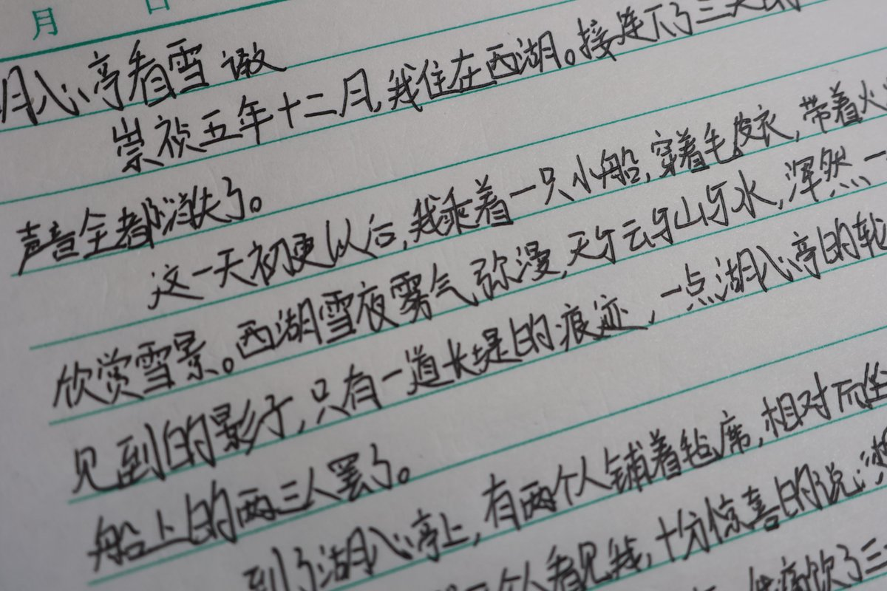
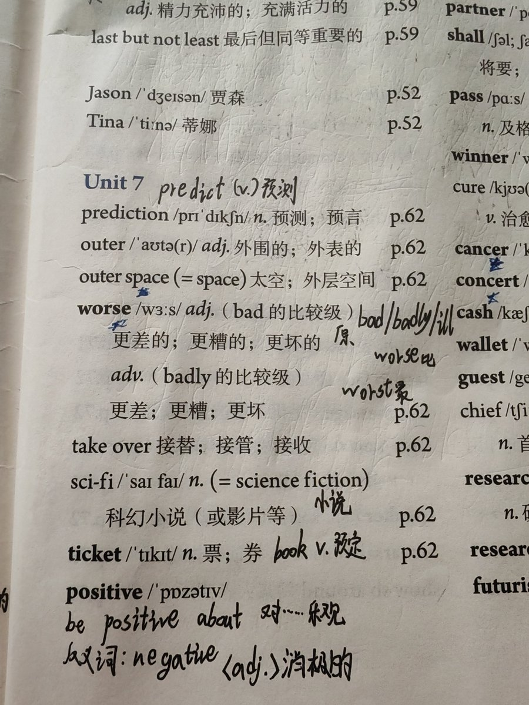

慕容小时候的字好丑，不过现在的倒是看起来好多了呢
这个字体看起来很没有攻击力，可爱w
而且就是日常写不费力的那种呢！
（真的会有人为了好看牺牲那么多效率嘛，似乎汉语的书写系统本来效率就不是很高，但阅读效率超级高）

这个字体看起来很没有攻击力，可爱w
而且就是日常写不费力的那种呢！
（真的会有人为了好看牺牲那么多效率嘛，似乎汉语的书写系统本来效率就不是很高，但阅读效率超级高）


我也思考过这个问题欸！
我们班有一个学霸（男生）的字像女生，还有我一个顺女同学的字就像男生
像我的话字体似乎会随着时间慢慢改变（翻出来好久以前的书都不敢相信那是我写的），而且也会受到状态和心情的影响 像男生还是女生也不一定呢
虽然字体和性别没太大关系，但写一手好字也挺好的呀～ https://t.co/9xj4GcSJfO https://t.co/rpMLXZuo8Q
我们班有一个学霸（男生）的字像女生，还有我一个顺女同学的字就像男生
像我的话字体似乎会随着时间慢慢改变（翻出来好久以前的书都不敢相信那是我写的），而且也会受到状态和心情的影响 像男生还是女生也不一定呢
虽然字体和性别没太大关系，但写一手好字也挺好的呀～ https://t.co/9xj4GcSJfO https://t.co/rpMLXZuo8Q